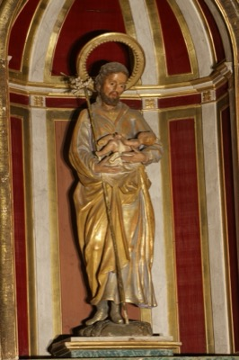
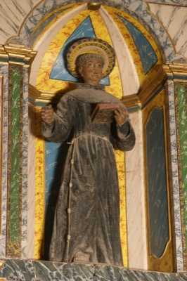
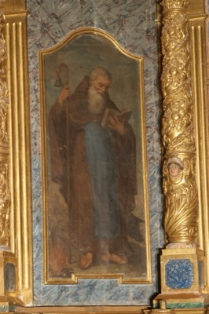
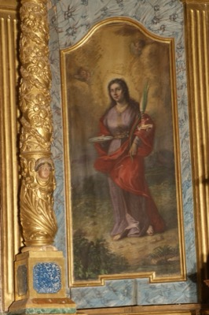
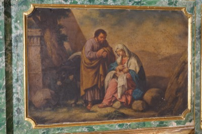
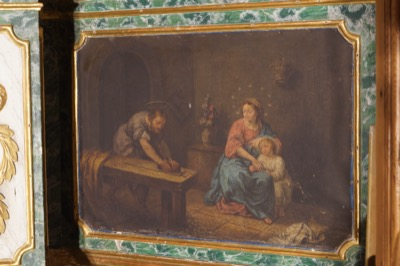
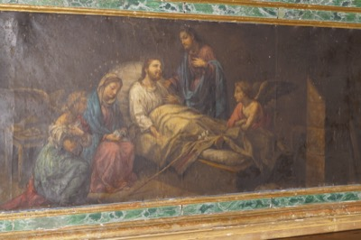
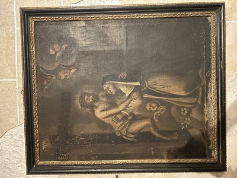

Sant Josep
Toca per veure la fitxa

Sant Antoni de Pàdua
Toca per veure la fitxa

Sant Antoni Abat
Toca per veure la fitxa

Santa Llúcia
Toca per veure la fitxa

Descans en la fugida de la Sagrada Família a Egipte
Toca per veure la fitxa

Sagrada Família al taller
Toca per veure la fitxa

Trànsit de sant Josep
Toca per veure la fitxa

Crist de la Passió abraçant una religiosa
Toca per veure la fitxa